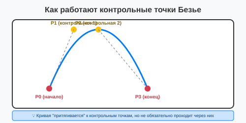

Урок 2.5: Геометрические примитивы
📌 Ключевые моменты этого урока:
- Геометрические примитивы — это базовые фигуры: прямоугольники, эллипсы, многоугольники
- Для каждой фигуры есть Draw* и Fill* методы (контур и заливка)
- Кривая Безье используется для создания гладких кривых линий
- DrawPolygon рисует замкнутую ломаную, DrawLines — разомкнутую
- Дуги (Arc) и секторы (Pie) используются для создания круговых диаграмм
- GraphicsPath позволяет комбинировать разные примитивы в один путь
Работа с геометрическими примитивами в Visual Studio
В Visual Studio вы можете использовать IntelliSense для изучения всех методов рисования фигур.
Использование IntelliSense с Graphics:
В обработчике Paint:
private void Form1_Paint(object sender, PaintEventArgs e)
{
Graphics g = e.Graphics;
// Напишите "g.Draw" и увидите список методов
g.Draw ← IntelliSense покажет:
┌──────────────────────────────────┐
│ Graphics │
│ ▼ │
│ • DrawArc(...) │
│ • Bezier(...) │
│ • BezierS(...) │
│ • ClosedCurve(...) │
│ • Curve(...) │
│ • Ellipse(...) │
│ • Icon(...) │
│ • Image(...) │
│ • Line(...) │
│ • Lines(...) │
│ • Path(...) │
│ • Pie(...) │
│ • Polygon(...) │
│ • Rectangle(...) │
│ • String(...) │
└──────────────────────────────────┘
Аналогично для "g.Fill":
┌──────────────────────────────────┐
│ Graphics │
│ ▼ │
│ • ClosedCurve(...) │
│ • Curve(...) │
│ • Ellipse(...) │
│ • Path(...) │
│ • Pie(...) │
│ • Polygon(...) │
│ • Rectangle(...) │
│ • Region(...) │
└──────────────────────────────────┘
}Прямоугольники (Rectangle & RoundedRectangle)
Простые прямоугольники:
// Контур прямоугольника
g.DrawRectangle(Pens.Black, 10, 10, 100, 50);
// Заполненный прямоугольник
g.FillRectangle(Brushes.Red, 10, 10, 100, 50);
// Использование структуры Rectangle
Rectangle rect = new Rectangle(10, 10, 100, 50);
g.DrawRectangle(Pens.Black, rect);
g.FillRectangle(Brushes.Blue, rect);Скругленные углы (Rounded Corners):
GDI+ не имеет встроенного DrawRoundedRectangle, но можно сделать вручную:
using System.Drawing.Drawing2D;
public void DrawRoundedRectangle(Graphics g, Pen pen, int x, int y, int width, int height, int radius)
{
GraphicsPath path = new GraphicsPath();
// Четыре угла и четыре стороны
path.AddArc(x, y, radius * 2, radius * 2, 180, 90); // Верхний левый
path.AddLine(x + radius, y, x + width - radius, y); // Верхняя сторона
path.AddArc(x + width - radius * 2, y, radius * 2, radius * 2, 270, 90); // Верхний правый
path.AddLine(x + width, y + radius, x + width, y + height - radius); // Правая сторона
path.AddArc(x + width - radius * 2, y + height - radius * 2, radius * 2, radius * 2, 0, 90); // Нижний правый
path.AddLine(x + width - radius, y + height, x + radius, y + height); // Нижняя сторона
path.AddArc(x, y + height - radius * 2, radius * 2, radius * 2, 90, 90); // Нижний левый
path.AddLine(x, y + height - radius, x, y + radius); // Левая сторона
path.CloseFigure();
g.DrawPath(pen, path);
}Эллипсы и круги
Основные методы:
// Эллипс (овал) — контур
g.DrawEllipse(Pens.Black, 10, 10, 100, 50); // Ширина > высота = овал
// Круг — контур (ширина = высота!)
g.DrawEllipse(Pens.Black, 50, 50, 100, 100); // Ширина = высота = круг
// Заполненный эллипс
g.FillEllipse(Brushes.Red, 10, 10, 100, 50);
// Заполненный круг
g.FillEllipse(Brushes.Blue, 50, 50, 100, 100);Важная разница между параметрами:
- Параметры: (x, y, width, height) — это ОГРАНИЧИВАЮЩИЙ ПРЯМОУГОЛЬНИК (bounding box), не центр!
- x, y — левый верхний угол прямоугольника, в который вписан эллипс
- width, height — размер этого прямоугольника
Практический пример:
private void Form1_Paint(object sender, PaintEventArgs e)
{
Graphics g = e.Graphics;
// Рисуем серый прямоугольник (bounding box)
g.DrawRectangle(Pens.Gray, 50, 50, 100, 100);
// Рисуем круг, вписанный в этот прямоугольник
g.DrawEllipse(Pens.Black, 50, 50, 100, 100);
// Рисуем овал (эллипс)
g.DrawEllipse(Pens.Red, 50, 200, 150, 80);
}Многоугольники (Polygon)
Многоугольник — это фигура, образованная несколькими прямыми линиями, которые замыкаются (возвращаются обратно в начальную точку).
DrawPolygon vs DrawLines:
Point[] points = {
new Point(100, 10), // Верхняя точка
new Point(150, 50), // Правая
new Point(120, 100), // Нижняя правая
new Point(80, 100), // Нижняя левая
new Point(50, 50) // Левая
};
// DrawPolygon — ЗАМКНУТАЯ фигура (сама замыкает контур)
g.DrawPolygon(Pens.Black, points);
g.FillPolygon(Brushes.Red, points);
// DrawLines — ОТКРЫТАЯ линия (не замыкается)
g.DrawLines(Pens.Blue, points); // Не вернется в начальную точкуПримеры многоугольников:
// Треугольник
Point[] triangle = { new Point(50, 10), new Point(100, 100), new Point(0, 100) };
g.FillPolygon(Brushes.Red, triangle);
// Пятиугольник (звезда)
Point[] star = {
new Point(50, 0),
new Point(60, 40),
new Point(100, 40),
new Point(70, 70),
new Point(80, 110),
new Point(50, 80),
new Point(20, 110),
new Point(30, 70),
new Point(0, 40),
new Point(40, 40)
};
g.FillPolygon(Brushes.Gold, star);
g.DrawPolygon(Pens.Orange, star);Кривые Безье (Bezier Curves)
Кривая Безье используется для создания гладких кривых линий, контролируемых контрольными точками.
Кубическая кривая Безье (самая распространенная):
Определяется 4 точками: начало, 2 контрольные точки, конец.
// DrawBezier — одна кривая
g.DrawBezier(Pens.Black,
new Point(10, 100), // P0 — начало
new Point(50, 10), // P1 — контрольная 1 (тянет кривую вверх)
new Point(150, 10), // P2 — контрольная 2 (тянет кривую вверх)
new Point(200, 100) // P3 — конец
);
// Несколько кривых подряд
g.DrawBeziers(Pens.Blue, new Point[]
{
new Point(10, 100), // P0
new Point(50, 10), // P1
new Point(150, 10), // P2
new Point(200, 100), // P3 (одновременно следующий P0)
new Point(250, 10), // P1
new Point(350, 10), // P2
new Point(400, 100) // P3
});Как работают контрольные точки:

Контрольные точки кривой Безье
Дуги (Arc) и секторы (Pie)
DrawArc — дуга окружности:
// Дуга от 0 до 90 градусов (четверть окружности)
g.DrawArc(Pens.Black, 50, 50, 100, 100, 0, 90);
// Дуга от 45 до 135 градусов (полукруг, сдвинутый)
g.DrawArc(Pens.Red, 50, 50, 100, 100, 45, 90);
// Полная окружность (0 до 360)
g.DrawArc(Pens.Blue, 50, 50, 100, 100, 0, 360);FillPie — сектор (как кусок пируга):
// Рисуем "круговую диаграмму" (три сектора)
// Сектор 1: от 0 до 120 градусов (красный)
g.FillPie(Brushes.Red, 50, 50, 100, 100, 0, 120);
// Сектор 2: от 120 до 240 градусов (синий)
// Нужно считать заново: начало от градуса 120, угол 120
g.FillPie(Brushes.Blue, 50, 50, 100, 100, 120, 120);
// Сектор 3: остаток (зеленый)
g.FillPie(Brushes.Green, 50, 50, 100, 100, 240, 120);Кривые (Curve/Spline)
В отличие от Безье, кривая сплайна ПРОХОДИТ через все точки (интерполирует):
Point[] curvePoints = {
new Point(10, 100),
new Point(50, 50),
new Point(100, 80),
new Point(150, 30),
new Point(200, 90)
};
// DrawCurve проходит через ВСЕ точки (интерполяция)
g.DrawCurve(Pens.Black, curvePoints);
// DrawCurve с натяжением (tension параметр 0..1)
g.DrawCurve(Pens.Blue, curvePoints, 0.5f); // Более гладкая
g.DrawCurve(Pens.Red, curvePoints, 0.1f); // Более остраяGraphicsPath — комбинирование примитивов
GraphicsPath позволяет объединить несколько фигур в один путь и рисовать их вместе:
using System.Drawing.Drawing2D;
GraphicsPath path = new GraphicsPath();
// Добавляем разные примитивы в один путь
path.AddEllipse(50, 50, 100, 100); // Круг
path.AddRectangle(new Rectangle(200, 50, 100, 100)); // Квадрат
path.AddLine(350, 50, 400, 150); // Линия
// Рисуем весь путь одной командой
g.DrawPath(Pens.Black, path);
g.FillPath(Brushes.Red, path);Практическое задание
Задание 1: Прямоугольники и эллипсы
- Нарисуйте прямоугольники разных размеров:
private void Form1_Paint(object sender, PaintEventArgs e) { Graphics g = e.Graphics; // Прямоугольники g.DrawRectangle(Pens.Black, 10, 10, 100, 50); g.FillRectangle(Brushes.Red, 120, 10, 80, 50); // Эллипсы g.DrawEllipse(Pens.Blue, 10, 70, 100, 60); g.FillEllipse(Brushes.Green, 120, 70, 80, 60); // Круг (ширина = высота) g.DrawEllipse(Pens.Black, 10, 140, 80, 80); } - Используйте IntelliSense для изучения методов (напишите "g.Draw" и "g.Fill")
- Запустите приложение
Задание 2: Многоугольники
- Нарисуйте треугольник и пятиугольник:
private void Form1_Paint(object sender, PaintEventArgs e) { Graphics g = e.Graphics; // Треугольник Point[] triangle = { new Point(50, 240), new Point(100, 340), new Point(0, 340) }; g.FillPolygon(Brushes.Red, triangle); g.DrawPolygon(Pens.Black, triangle); // Пятиугольник Point[] pentagon = { new Point(150, 240), new Point(190, 260), new Point(180, 310), new Point(120, 310), new Point(110, 260) }; g.FillPolygon(Brushes.Blue, pentagon); g.DrawPolygon(Pens.Black, pentagon); } - Запустите приложение
Задание 3: Кривые Безье
- Нарисуйте кривую Безье:
private void Form1_Paint(object sender, PaintEventArgs e) { Graphics g = e.Graphics; // Кривая Безье g.DrawBezier(Pens.Black, new Point(10, 400), // Начало new Point(50, 350), // Контрольная 1 new Point(150, 350), // Контрольная 2 new Point(200, 400) // Конец ); // Рисуем контрольные точки для наглядности g.FillEllipse(Brushes.Red, 10 - 3, 400 - 3, 6, 6); // Начало g.FillEllipse(Brushes.Blue, 50 - 3, 350 - 3, 6, 6); // К1 g.FillEllipse(Brushes.Blue, 150 - 3, 350 - 3, 6, 6); // К2 g.FillEllipse(Brushes.Red, 200 - 3, 400 - 3, 6, 6); // Конец } - Запустите приложение и посмотрите, как контрольные точки влияют на форму кривой
Задание 4: Секторы (Pie)
- Нарисуйте круговую диаграмму:
private void Form1_Paint(object sender, PaintEventArgs e) { Graphics g = e.Graphics; // Круговая диаграмма g.FillPie(Brushes.Red, 250, 240, 100, 100, 0, 90); // 25% g.FillPie(Brushes.Green, 250, 240, 100, 100, 90, 90); // 25% g.FillPie(Brushes.Blue, 250, 240, 100, 100, 180, 90); // 25% g.FillPie(Brushes.Yellow, 250, 240, 100, 100, 270, 90); // 25% } - Запустите приложение
Задание 5: Композиция (домик)
- Нарисуйте простой домик из примитивов:
private void Form1_Paint(object sender, PaintEventArgs e) { Graphics g = e.Graphics; // Стены g.FillRectangle(Brushes.Wheat, 50, 400, 150, 100); g.DrawRectangle(Pens.Black, 50, 400, 150, 100); // Крыша (треугольник) Point[] roof = { new Point(40, 400), new Point(125, 330), new Point(210, 400) }; g.FillPolygon(Brushes.Red, roof); g.DrawPolygon(Pens.Black, roof); // Окно g.FillRectangle(Brushes.LightBlue, 85, 430, 30, 30); g.DrawRectangle(Pens.Black, 85, 430, 30, 30); // Дверь g.FillRectangle(Brushes.Brown, 120, 450, 50, 50); g.DrawRectangle(Pens.Black, 120, 450, 50, 50); } - Запустите приложение
💡 Совет: Используйте IntelliSense для изучения всех методов рисования. Начните вводить "Draw" или "Fill" — вы увидите все доступные методы.
Проверка знаний
Ответьте на вопросы, чтобы проверить, насколько хорошо вы усвоили материал:
1. Как нарисовать круг в GDI+?
2. Какой метод используется для рисования кривых Безье?
3. Сколько контрольных точек нужно для кривой Безье?
4. Какой метод рисует замкнутый многоугольник?
5. Какой метод рисует сектор круга?
6. В чем разница между DrawLines и DrawPolygon?
7. Какая структура используется для задания прямоугольника?
8. Какой метод рисует кривую, проходящую через все точки?